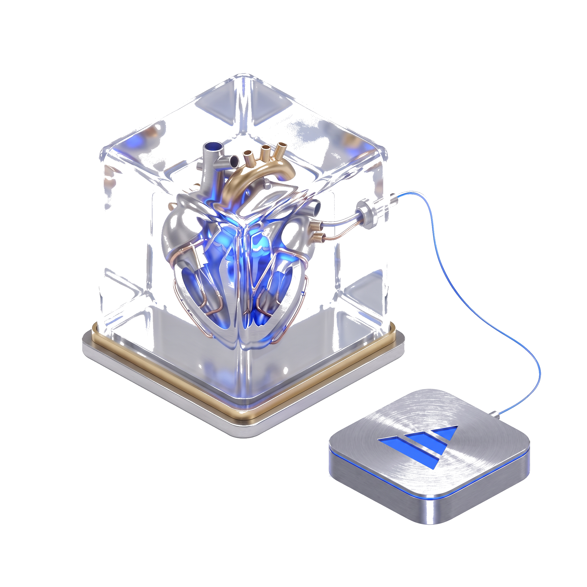

<title>Firelock</title>
<meta name="description" content="A Firecracker-microVM execution shell: the guest has zero network interfaces and exactly one audited vsock egress. Sealed by construction. Visible by design.">
<link rel="preconnect" href="https://fonts.googleapis.com">
<link rel="preconnect" href="https://fonts.gstatic.com" crossorigin>
<link href="https://fonts.googleapis.com/css2?family=IBM+Plex+Mono:wght@400;500;600;700&family=IBM+Plex+Sans:wght@400;500;600;700&display=swap" rel="stylesheet">
<style>
  :root {
    --bg: #f6f7f9;
    --bg-raised: #ffffff;
    --ink: #12151b;
    --ink-dim: #4b5563;
    --line: #d7dce3;
    --accent: #1568b0;
    --accent-ink: #ffffff;
    --steel: #5b6572;
    --glow: rgba(21, 104, 176, 0.14);
    --code-bg: #eef1f5;
    --shadow: rgba(20, 24, 32, 0.08);
  }

  @media (prefers-color-scheme: dark) {
    :root:not([data-theme="light"]) {
      --bg: #0a0d12;
      --bg-raised: #11151d;
      --ink: #e7ebf1;
      --ink-dim: #9aa5b3;
      --line: #232a35;
      --accent: #4fa8ef;
      --accent-ink: #071018;
      --steel: #8b96a5;
      --glow: rgba(79, 168, 239, 0.16);
      --code-bg: #0d1219;
      --shadow: rgba(0, 0, 0, 0.4);
    }
  }

  :root[data-theme="dark"] {
    --bg: #0a0d12;
    --bg-raised: #11151d;
    --ink: #e7ebf1;
    --ink-dim: #9aa5b3;
    --line: #232a35;
    --accent: #4fa8ef;
    --accent-ink: #071018;
    --steel: #8b96a5;
    --glow: rgba(79, 168, 239, 0.16);
    --code-bg: #0d1219;
    --shadow: rgba(0, 0, 0, 0.4);
  }

  * { box-sizing: border-box; }

  body {
    margin: 0;
    background: var(--bg);
    color: var(--ink);
    font-family: "IBM Plex Sans", ui-sans-serif, system-ui, -apple-system, sans-serif;
    font-size: 17px;
    line-height: 1.6;
    -webkit-font-smoothing: antialiased;
  }

  ::selection { background: var(--glow); color: var(--ink); }

  a { color: var(--accent); }

  h1, h2, h3 {
    font-family: "IBM Plex Mono", ui-monospace, SFMono-Regular, monospace;
    text-wrap: balance;
    letter-spacing: -0.01em;
    margin: 0;
  }

  .wrap {
    max-width: 920px;
    margin: 0 auto;
    padding: 0 24px;
  }

  .eyebrow {
    display: inline-flex;
    align-items: center;
    gap: 0.5em;
    font-family: "IBM Plex Mono", monospace;
    font-size: 0.78rem;
    letter-spacing: 0.14em;
    text-transform: uppercase;
    color: var(--steel);
  }

  .eyebrow::before {
    content: "";
    width: 7px;
    height: 7px;
    border-radius: 50%;
    background: var(--accent);
    box-shadow: 0 0 0 4px var(--glow);
  }

  /* header / nav */
  header.top {
    position: sticky;
    top: 0;
    z-index: 10;
    backdrop-filter: blur(10px);
    background: color-mix(in srgb, var(--bg) 82%, transparent);
    border-bottom: 1px solid var(--line);
  }

  .topnav {
    display: flex;
    align-items: center;
    justify-content: space-between;
    padding: 14px 24px;
    max-width: 920px;
    margin: 0 auto;
  }

  .brand {
    font-family: "IBM Plex Mono", monospace;
    font-weight: 600;
    font-size: 1rem;
    display: flex;
    align-items: center;
    gap: 0.5em;
  }

  .brand .dot { color: var(--accent); }

  .topnav nav {
    display: flex;
    gap: 22px;
    font-family: "IBM Plex Mono", monospace;
    font-size: 0.85rem;
  }

  .topnav nav a { color: var(--ink-dim); text-decoration: none; }
  .topnav nav a:hover { color: var(--accent); }

  /* hero */
  .hero {
    padding: 72px 0 40px;
  }

  .hero-grid {
    display: grid;
    grid-template-columns: 1.1fr 0.9fr;
    gap: 48px;
    align-items: center;
  }

  .hero h1 {
    font-size: clamp(1.9rem, 4vw, 2.7rem);
    line-height: 1.12;
    margin: 18px 0 8px;
  }

  .hero .tagline {
    font-family: "IBM Plex Mono", monospace;
    font-size: 1.05rem;
    color: var(--accent);
    margin: 0 0 20px;
  }

  .hero p.lede {
    color: var(--ink-dim);
    font-size: 1.05rem;
    max-width: 54ch;
  }

  .hero-art {
    border-radius: 18px;
    overflow: hidden;
    border: 1px solid var(--line);
    box-shadow: 0 24px 60px var(--shadow);
    background: var(--bg-raised);
  }

  .hero-art img { display: block; width: 100%; height: auto; }

  .status-line {
    margin-top: 26px;
    padding: 14px 16px;
    border: 1px solid var(--line);
    border-left: 3px solid var(--accent);
    background: var(--bg-raised);
    border-radius: 6px;
    font-size: 0.92rem;
    color: var(--ink-dim);
  }
  .status-line strong { color: var(--ink); }

  .cta-row { display: flex; gap: 14px; margin-top: 26px; flex-wrap: wrap; }

  .btn {
    display: inline-flex;
    align-items: center;
    gap: 0.5em;
    padding: 10px 18px;
    border-radius: 8px;
    font-family: "IBM Plex Mono", monospace;
    font-size: 0.88rem;
    text-decoration: none;
    border: 1px solid var(--line);
  }
  .btn.primary { background: var(--accent); color: var(--accent-ink); border-color: var(--accent); }
  .btn.ghost { color: var(--ink); }

  /* sections */
  section { padding: 56px 0; border-top: 1px solid var(--line); }

  .section-head { max-width: 60ch; margin-bottom: 36px; }
  .section-head h2 { font-size: 1.5rem; margin-bottom: 10px; }
  .section-head p { color: var(--ink-dim); margin: 0; }

  /* runtime gap */
  .gap-grid {
    display: grid;
    grid-template-columns: repeat(3, 1fr);
    gap: 20px;
  }

  .gap-card {
    background: var(--bg-raised);
    border: 1px solid var(--line);
    border-radius: 12px;
    padding: 22px;
  }

  .gap-card .kicker {
    font-family: "IBM Plex Mono", monospace;
    font-size: 0.72rem;
    text-transform: uppercase;
    letter-spacing: 0.1em;
    color: var(--accent);
    margin-bottom: 10px;
    display: block;
  }

  .gap-card h3 { font-size: 1.05rem; margin-bottom: 10px; }
  .gap-card p { color: var(--ink-dim); font-size: 0.93rem; margin: 0; }

  /* capabilities */
  .cap-grid {
    display: grid;
    grid-template-columns: repeat(2, 1fr);
    gap: 16px;
  }

  .cap-card {
    padding: 20px;
    border: 1px solid var(--line);
    border-radius: 10px;
    background: var(--bg-raised);
  }
  .cap-card h3 {
    font-size: 0.98rem;
    display: flex;
    align-items: baseline;
    gap: 0.5em;
    margin-bottom: 8px;
  }
  .cap-card h3 .tag {
    font-family: "IBM Plex Mono", monospace;
    font-size: 0.68rem;
    padding: 2px 7px;
    border-radius: 20px;
    text-transform: uppercase;
    letter-spacing: 0.06em;
    border: 1px solid var(--line);
    color: var(--ink-dim);
  }
  .cap-card h3 .tag.shipped { color: var(--accent); border-color: var(--accent); }
  .cap-card p { color: var(--ink-dim); font-size: 0.92rem; margin: 0; }

  /* confinement diagram */
  .diagram {
    background: var(--code-bg);
    border: 1px solid var(--line);
    border-radius: 10px;
    padding: 20px;
    overflow-x: auto;
  }
  .diagram pre {
    margin: 0;
    font-family: "IBM Plex Mono", monospace;
    font-size: 0.82rem;
    line-height: 1.7;
    color: var(--ink);
    white-space: pre;
  }
  .diagram .accent-line { color: var(--accent); }

  .guarantee-note {
    margin-top: 18px;
    color: var(--ink-dim);
    font-size: 0.95rem;
  }

  /* links / footer */
  .link-grid {
    display: grid;
    grid-template-columns: repeat(3, 1fr);
    gap: 16px;
  }
  .link-card {
    display: block;
    text-decoration: none;
    padding: 18px;
    border: 1px solid var(--line);
    border-radius: 10px;
    background: var(--bg-raised);
    color: var(--ink);
  }
  .link-card .arrow { color: var(--accent); font-family: "IBM Plex Mono", monospace; }
  .link-card h3 { font-size: 0.95rem; margin-bottom: 6px; }
  .link-card p { color: var(--ink-dim); font-size: 0.85rem; margin: 0; }

  footer {
    border-top: 1px solid var(--line);
    padding: 32px 0 60px;
    color: var(--steel);
    font-family: "IBM Plex Mono", monospace;
    font-size: 0.8rem;
  }
  footer .wrap { display: flex; justify-content: space-between; flex-wrap: wrap; gap: 10px; }

  code, .inline-code {
    font-family: "IBM Plex Mono", monospace;
    background: var(--code-bg);
    padding: 0.1em 0.4em;
    border-radius: 4px;
    font-size: 0.9em;
  }

  @media (max-width: 760px) {
    .hero-grid { grid-template-columns: 1fr; }
    .gap-grid { grid-template-columns: 1fr; }
    .cap-grid { grid-template-columns: 1fr; }
    .link-grid { grid-template-columns: 1fr; }
    .topnav nav { gap: 14px; font-size: 0.78rem; }
    .hero { padding: 44px 0 24px; }
    section { padding: 40px 0; }
  }

  @media (prefers-reduced-motion: no-preference) {
    .hero-art { transition: transform 0.4s ease; }
  }
</style>

<header class="top">
  <div class="topnav">
    <div class="brand"><span class="dot">&#9679;</span> firelock</div>
    <nav>
      <a href="#runtime-gap">Runtime gap</a>
      <a href="#capabilities">Capabilities</a>
      <a href="#confinement">Confinement</a>
      <a href="https://github.com/firelock-sandbox/firelock/blob/main/docs/wire-contract.md">Wire contract</a>
      <a href="https://github.com/firelock-sandbox/firelock">Repo</a>
    </nav>
  </div>
</header>

<main>
  <section class="hero wrap" style="border-top: none;">
    <div class="hero-grid">
      <div>
        <span class="eyebrow">Firecracker-microVM execution shell</span>
        <h1>Every agent has a pulse. Now you can watch it.</h1>
        <p class="tagline">Sealed by construction. Visible by design.</p>
        <p class="lede">
          Firelock confines an untrusted guest to a single, guest-initiated vsock egress and relays that
          connection to a handler you choose. No network interface for the guest to reach out on &mdash;
          just the one audited seam everything, including what you watch, travels through.
        </p>
        <div class="cta-row">
          <a class="btn primary" href="https://github.com/firelock-sandbox/firelock">View the repo</a>
          <a class="btn ghost" href="https://github.com/firelock-sandbox/firelock/blob/main/docs/wire-contract.md">Read the wire contract</a>
        </div>
        <div class="status-line">
          <strong>Status: 1.1.0</strong> &mdash; this repository carries the confinement/relay contract, the
          OSS default handler, the TypeScript runtime (Firecracker client and pool, jailer, vsock, fd-handoff
          FFI bindings, per-invocation VM), the native crates (fd-handoff transport, handler confinement with
          seccomp) and the guest init.
        </div>
      </div>
      <div class="hero-art">
        <picture>
          <source media="(prefers-color-scheme: dark)" srcset="assets/sealed-heart-dark.png">
          <source media="(prefers-color-scheme: light)" srcset="assets/sealed-heart.png">
          
        </picture>
      </div>
    </div>
  </section>

  <section id="runtime-gap" class="wrap">
    <div class="section-head">
      <h2>The runtime gap</h2>
      <p>Three trade-offs every sandbox or serverless runtime forces on you. Three answers Firelock is built around.</p>
    </div>
    <div class="gap-grid">
      <div class="gap-card">
        <span class="kicker">01 &middot; the blind sandbox</span>
        <h3>Kernel-native visibility</h3>
        <p>
          Seal a workload properly and you usually lose sight of it. Firelock keeps resource and lifecycle
          signals emitting from inside the sealed guest, riding out over the same seam as everything else
          &mdash; no sidecar required.
        </p>
      </div>
      <div class="gap-card">
        <span class="kicker">02 &middot; the leaky sidecar</span>
        <h3>One audited egress</h3>
        <p>
          The usual fix punches a hole in the seal: a monitoring agent that talks to the network. Firelock
          gives the guest exactly one vsock channel it can ever dial out on &mdash; everything leaves the
          same single, auditable way.
        </p>
      </div>
      <div class="gap-card">
        <span class="kicker">03 &middot; the open network</span>
        <h3>Network-less by construction</h3>
        <p>
          A workload with a network stack can reach anything the network can. Firelock's guest has zero
          virtual network interfaces &mdash; no tun/tap, no bridge &mdash; so it structurally cannot scan a
          LAN or resolve a domain.
        </p>
      </div>
    </div>
  </section>

  <section id="capabilities" class="wrap">
    <div class="section-head">
      <h2>What's in the box</h2>
      <p>Four capabilities that define what Firelock is. Ship status is marked plainly &mdash; nothing here claims more than the repo does.</p>
    </div>
    <div class="cap-grid">
      <div class="cap-card">
        <h3>Network-less microVM <span class="tag shipped">shipped</span></h3>
        <p>Zero NICs on the guest &mdash; no tun/tap, no bridge, no TCP/IP stack. Asserted fail-closed by <code class="inline-code">assertFirelockTopology</code>.</p>
      </div>
      <div class="cap-card">
        <h3>A single audited egress <span class="tag shipped">shipped</span></h3>
        <p>One vsock seam, one fd handoff. Never zero-leak &mdash; data does leave, through that one seam, by design. See the wire contract.</p>
      </div>
      <div class="cap-card">
        <h3>Fast warm starts <span class="tag">design intent</span></h3>
        <p>In the platform Firelock was extracted from, a pre-warmed snapshot pool resumes a slot in ~17&nbsp;ms. That pool/orchestration layer isn't yet part of this repo.</p>
      </div>
      <div class="cap-card">
        <h3>Runaway-resource circuit-breaker <span class="tag">roadmap</span></h3>
        <p>Autonomous teardown of a workload that saturates its resource budget &mdash; not a claim of catching every infinite loop. Not yet implemented in <code class="inline-code">src/</code>.</p>
      </div>
    </div>
  </section>

  <section id="confinement" class="wrap">
    <div class="section-head">
      <h2>The confinement guarantee</h2>
      <p>
        A Firelock-confined microVM has zero network interfaces and exactly one vsock device. That is
        asserted, fail-closed, in one place &mdash; <code class="inline-code">assertFirelockTopology</code>.
        "Could not check" is never "it is fine": an unreadable or ambiguous VM config is refused, not waved
        through.
      </p>
    </div>
    <div class="diagram">
      <pre>  ZERO network interfaces (no NIC, no add-interface code path)  &rarr; closes IP egress   <span class="accent-line">[BY CONSTRUCTION]</span>
  Firecracker's built-in seccomp filters                        &rarr; closes non-vsock families
  ONE vsock device / one host socket per VM                     &rarr; closes multi-channel
  &mdash;&mdash;&mdash;&mdash;&mdash;&mdash;&mdash;&mdash;&mdash;&mdash;&mdash;&mdash;&mdash;&mdash;&mdash;&mdash;&mdash;&mdash;&mdash;&mdash;&mdash;&mdash;&mdash;&mdash;&mdash;&mdash;&mdash;&mdash;&mdash;&mdash;&mdash;&mdash;&mdash;&mdash;&mdash;&mdash;&mdash;&mdash;&mdash;&mdash;&mdash;&mdash;&mdash;&mdash;&mdash;
  = exactly one guest-initiated egress, and it is the seam.</pre>
    </div>
    <p class="guarantee-note">
      Isolation, precisely stated: <strong>no network interface &mdash; by construction</strong>. Not
      "unhackable," not "mathematically impossible" &mdash; a structural property you can check. The seam
      itself is <strong>tamper-evident</strong>: a topology that would allow a second channel is refused
      outright, not silently accepted.
    </p>
  </section>

  <section class="wrap">
    <div class="section-head">
      <h2>Go deeper</h2>
      <p>The wire contract is the whole language-agnostic boundary. The repo is where the code lives.</p>
    </div>
    <div class="link-grid">
      <a class="link-card" href="https://github.com/firelock-sandbox/firelock/blob/main/docs/wire-contract.md">
        <span class="arrow">&rarr;</span>
        <h3>Wire contract</h3>
        <p>The fd handoff, ingress/egress, and the confinement contract in full.</p>
      </a>
      <a class="link-card" href="https://github.com/firelock-sandbox/firelock">
        <span class="arrow">&rarr;</span>
        <h3>Source repository</h3>
        <p>Confinement/relay contract, the OSS default handler, and the roadmap.</p>
      </a>
      <a class="link-card" href="https://github.com/firelock-sandbox/firelock/blob/main/LICENSE">
        <span class="arrow">&rarr;</span>
        <h3>Apache-2.0 license</h3>
        <p>An independent building block you import &mdash; no account, no service dependency.</p>
      </a>
    </div>
  </section>
</main>

<footer>
  <div class="wrap">
    <span>firelock &mdash; 1.1.0</span>
    <span>Apache-2.0</span>
  </div>
</footer>
